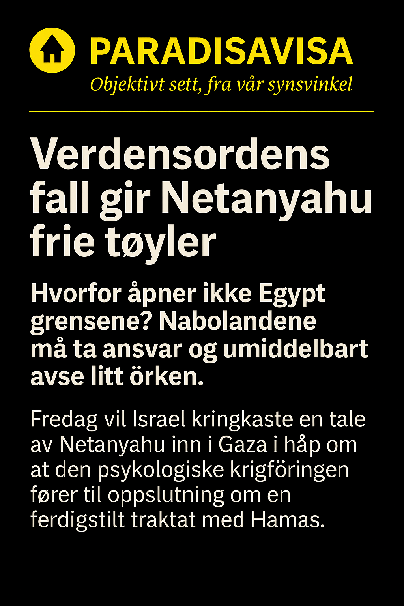

Hevnens sirkel
Når offeret tar i bruk overgriperens vold
Et folk som har levd gjennom utryddelse bærer en dyp frykt. Når frykten blir styrende, blir hevnen dens språk.
29. september 2025
Israel er født av traume. Staten ble grunnlagt i skyggen av et av historiens største overgrep, og den kollektive smerten fra dette overgrepet har formet en nasjonal psyke. I dag ser vi hvordan denne smerten, i stedet for å lege, har blitt omsatt til kraft. Men kraften er ikke lenger defensiv – den har blitt til gjengjeldelse.
Når man lever med minner om utryddelse, kan ethvert angrep vekke følelsen av eksistensiell trussel. Det forklarer mye av den politiske retorikken i Israel: at alle fiender er potensielle utslettere, og at vold må møtes med vold – helst så overveldende at ingen våger å prøve igjen. Dette er hevnens rasjonalitet. Den virker logisk for den som bærer frykten i kroppen, men den er samtidig ødeleggende for alle som rammes av den.
Overgriperens vold blir gjenbrukt, ikke fordi man ønsker å ligne ham, men fordi volden gir en illusjon av kontroll. Den som ble avmektig, gjenskaper maktens språk. Bombingen av Gaza er et uttrykk for dette: en desperat vilje til å vise at ingen skal kunne true jødene igjen – selv om prisen blir umenneskelig høy for andre.
Terrorangrepet mot festivalen i Israel var et slikt øyeblikk som forandret alt. Hundrevis av unge mennesker ble drept på et sted som symboliserte frihet og fellesskap. Det var en brutal påminnelse om hvor sårbart et samfunn er når hatet får kropper og våpen. I dagene som fulgte ble sorgen omdannet til raseri, og raseri til politisk drivkraft. Når vold rammer på det mest uskyldige, forsterkes behovet for hevn. Slik åpnet et enkelt, forferdelig angrep døren til en ny spiral av gjengjeldelse – en spiral som ikke lenger skiller mellom skyld og uskyld, bare mellom «oss» og «dem».
Slik oppstår voldsspiralen. Hver død blir argument for neste angrep. Hver frykt gjør hevnen lettere å forklare. Og når man først har vendt blikket bort fra den andres menneskelighet, finnes det ingen naturlig stopp. Hevn fordreier moral, fordi den får selv den skyldige til å virke rettferdig.
Hevnens psykologiske paradoks er at den aldri forløser smerten den kommer fra. Den gjenføder den. Offeret som tar hevn, blir ikke fri, men bundet – til de samme strukturene som en gang frarøvet dets frihet. Først når man tør å se sin egen vold i øynene, kan man bryte sirkelen.
Israel trenger ikke mer makt for å være trygt. Det trenger en ny fortelling om hva trygghet er. For den som gjentar overgriperens metoder, vil alltid forbli fanget i hans logikk.
Øye for øye-logikk i Toraen
I mange tradisjoner finnes ideer som kan tolkes som rettferdiggjørelser for gjengjeldelse. Et klassisk eksempel er det bibelske prinsippet lex talionis — «øye for øye», slik det formuleres i Toraen. Historisk har dette uttrykket ikke alltid fungert som en oppfordring til eskalering; i mange tolkninger var regelen ment å sette en grense for hevn: den skulle være proporsjonal og hindre ubegrenset gjengjeldelse.
Likevel har symbolikken ved «øye for øye» en kraftig psykologisk resonans. Når en hel befolkning bærer minner om dyp urett, kan slike idealer bli hentet fram i offentlig retorikk eller i populær forståelse som en rettferdighetsmetafor — ikke nødvendigvis i teologisk presis form, men som en enkel moralsk logikk: skade må besvares for at ære eller sikkerhet skal opprettes. Når politiske ledere eller opinionen gjør bruk av denne type symbolikk uten samtidig å holde fast i begrensningen mot overdreven gjengjeldelse, kan prinsippet misbrukes til å legitimere langt mer omfattende vold.
Å forholde seg kritisk til hvordan religiøse eller historiske motiver brukes i samtidens retorikk er viktig. «Øye for øye»-referansen kan fungere som advarsel eller som forklaring — avhengig av hvem som bruker den og i hvilken kontekst. Som analyseverktøy hjelper den oss å se hvorfor hevn virker så umiddelbart rettferdig for dem som lider, og hvorfor den likevel lett glir over i en destruktiv logikk som fornyer lidelsen.